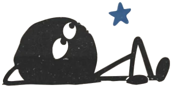
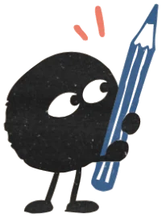
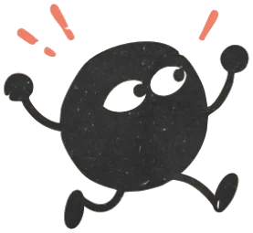
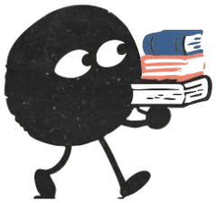
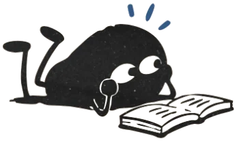
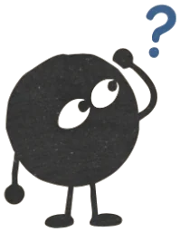
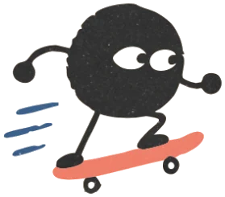

Las historias que nadie más está contando.
Crónicas de largo aliento escritas por autores premiados. Toca cualquiera para leerla aquí mismo.
Todo lo que trae la revista

Estelares
Crónica de largo aliento.

Los anteojos
Ensayo y análisis de coyuntura.

El creativo
Semanario de literatura: relatos y poemas.

Masa Crítica
Pódcast con Juan Villoro, Leo Zuckermann y más.

Recomendaciones
Libros, cine y cartelera cada mes.

Archivo completo
Todo lo publicado, abierto durante el piloto.
Cuatro pasos y tu comunidad ya está leyendo.
El trabajo operativo corre por nuestra cuenta. A la universidad le pedimos solo el primer paso.
-
Nos dicen a quién activar
Hay dos caminos; la universidad elige el que le acomode.
Una listaNos comparten los correos de los alumnos o docentes que participarán.o Un enlace abiertoLes mandamos un link de acceso para que cualquiera de la comunidad se registre.
-
Los damos de alta en Perpetuo
Activamos su acceso completo en la plataforma. Empiezan a recibir Perpetuo en su correo y pueden leer todo el archivo.

-
Medimos y les reportamos
Monitoreamos la activación y el uso, y entregamos un reporte a la universidad.
- Activación de accesos
- Uso y lectura
-
Plática o taller Si les interesa
Organizamos con ustedes una plática o un taller de escritura para la comunidad.